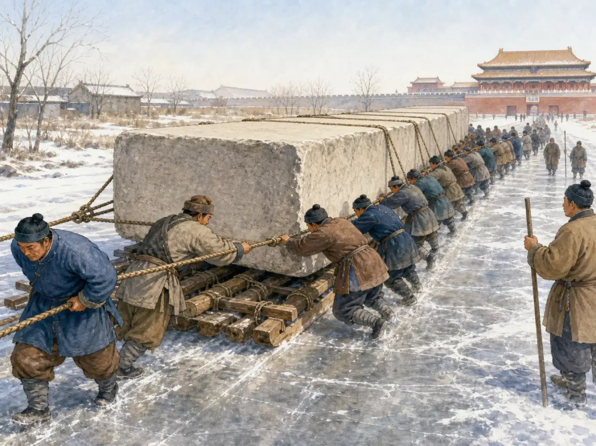

故宫：一座城里的皇宫
The Forbidden City: A Palace Inside a City
Page 1
皇宫为什么像一座城？
Why Does the Palace Feel Like a City?

Wide courtyards and one gate after another made the palace feel grand and important.
在北京城中心，有一片红墙和金色屋顶。远远看去，它不太像一座房子，更像一座被围起来的小城。这就是Gùgōng · 北京明清两代的皇宫建筑群。。六百多年前，它是皇帝居住和处理国家大事的皇宫。
故宫里不只有皇帝一家。侍卫守着宫门，厨师准备饭菜，工匠修屋顶，官员来到大殿办事。还有许多人照顾花园、马匹、衣服和书画。要让这样大的皇宫每天运转，需要许多人一起工作。
过去，人们也叫这里紫禁城（Zǐjìnchéng）。“紫”是紫色的“紫”。古人把天空中与天帝有关的一组星星叫“紫微垣”，所以“紫”也让人想到皇帝的宫殿。“禁”说明普通人不能随便进去。在古汉语里，“城”指有城墙围住的地方；今天说“城市”时，我们通常不会再想到那堵墙。合起来，这个名字告诉人们：这里是皇帝居住、守卫森严的宫城。
今天，这里是故宫博物院。普通游客也能走过从前守卫森严的宫门了。
In the center of Beijing stands a sea of red walls and golden roofs. From far away, it looks less like one house and more like a small city behind walls. This is the Gùgōng · 故宫 · The enormous imperial palace complex in Beijing used during the Ming and Qing dynasties.. More than six hundred years ago, it was a palace where emperors lived and ran the country.
The emperor's family was not alone there. Guards watched the gates. Cooks prepared meals. Craftspeople repaired roofs. Officials came to work in the great halls. Many other people cared for gardens, horses, clothing, books, and paintings. It took a great many people to keep such a huge palace running.
In Chinese, its old name is 紫禁城 (Zǐjìnchéng). The first character, 紫 (zǐ), means “purple.” Ancient Chinese people connected it with a group of stars where they believed the ruler of heaven lived, so it also brought an emperor's palace to mind. 禁 (jìn) means “forbidden” or “closely guarded.” In older Chinese, 城 (chéng) meant a city or settlement surrounded by a wall. Today, the same character in 城市 (chéngshì) simply means “city.” Together, the old name tells us that this was the emperor's closely guarded palace city.
Today, it is the Palace Museum. Ordinary visitors can walk through gates that were once closely guarded.
Page 2
为什么有这么多门和院子？
Why So Many Gates and Courtyards?
走进故宫，你会经过一扇门，又一扇门，再一扇门。每扇门后常常都有一个大院子。为什么不直接修一条短路，走到皇帝面前呢？
因为这些门不只是出入口。它们把皇宫分成不同的地方，也让重要的仪式像一段旅程。大队人马走过长路，穿过高门，再进入宽阔的院子，远处的大殿就显得越来越庄严。建筑不用开口，也能告诉来访的人：“这里很重要。”
前面的院子和大殿主要用来举行仪式和处理国家大事。更里面才有皇帝一家生活的院落。墙和门让一座巨大的皇宫变得有顺序，也让守卫知道该把谁拦在哪里。
Walk through the Forbidden City and you meet one gate, then another, then another. Behind each gate is often a large courtyard. Why did the builders not make one short path straight to the emperor?
The gates were more than entrances. They divided the palace into different areas and made an important ceremony feel like a journey. A long line of people moved down a path, passed through a tall gate, and entered a wide courtyard. With every step, the great hall ahead seemed more impressive. Without saying a word, the buildings told visitors, “This place matters.”
The front courtyards and halls were mainly used for ceremonies and the country's important business. Farther inside were the places where the emperor's family lived. Walls and gates brought order to a huge palace, and they helped guards know where each visitor had to stop.
Page 3
一块巨石怎样走过四十三英里？
How Did a Giant Stone Travel 43 Miles?

In winter, workers placed a giant stone on a wooden sledge and slowly pulled it along an icy road.
宫殿需要许多大石头。可是古代没有卡车，工人怎样把一块比十几头大象还重的石头运进北京？一份四百多年前的记录留下了答案。
工人等到冬天，把巨石放在木橇上。路边每隔一段距离就挖一口井。他们把井水泼到寒冷的路面上，让水结成一条又平又滑的冰路。许多人一起拉，巨石便一点一点向前移动。
其中一块石头走了大约四十三英里，花了二十八天。速度不快，却比在干土上硬拖省力，也能少一些颠簸。皇帝可以下令修宫殿，但石头不会自己飞来。有人从山里凿出石头，有人把它们拉到北京，还有人做木工、烧屋瓦、画彩画。正是这些人的双手建起了皇宫。
A palace needed many enormous stones. But there were no trucks in ancient China. How could workers move a stone heavier than a dozen elephants all the way to Beijing? A record from more than four hundred years ago gives us an answer.
Workers waited for winter and placed the stone on a wooden sledge. They dug wells along the road and poured water onto the frozen ground. The water made a smooth, slippery path of ice. Then large teams pulled together, moving the stone little by little.
One stone traveled about 43 miles and took 28 days to arrive. That was slow, but pulling it over ice took less force and gave it a smoother ride than dragging it over dry ground. An emperor could order a palace to be built, but the stones did not move themselves. Workers cut them from the hills and pulled them to Beijing. Other workers shaped wood, made roof tiles, and painted the halls. Their hands built the palace.
Page 4
皇宫里也需要树荫
Even a Palace Needed Shade

The Imperial Garden has old trees, rocks, and pavilions—a sharp change from the wide courtyards in front.
故宫前面的大院子非常开阔。这里要站下许多人，还要举行庄严的仪式，所以地面不能被一排排树木挡住。站在院子里，你会觉得大殿很高，自己很小。
可是一直向北走，景色会突然改变。御花园里有弯曲的小路、古树、奇石和小亭子。夏天有树荫，冬天能看见枝条和屋顶交错在一起。皇宫不只有公开的大仪式，也有人散步、休息和过日子的地方。
这种变化是故宫很有意思的地方。建筑师先让人穿过整齐、宽大的空间，再把人带进小而安静的花园。同一座皇宫，可以让人的心情也跟着空间一起改变。
The great courtyards near the front of the Forbidden City are wide and open. Large groups gathered there for formal ceremonies, so rows of trees could not fill the space. Standing in one of these courtyards, you may feel that the hall is very tall and you are very small.
Keep walking north, however, and the scene suddenly changes. The Imperial Garden has winding paths, old trees, unusual rocks, and small pavilions. Trees give shade in summer. In winter, their branches cross in front of colorful roofs. A palace needed more than public ceremonies. People also needed places to walk, rest, and live.
That change is part of the fun of moving through the palace. First, the builders lead you through spaces that are straight, wide, and grand. Then they bring you into a garden that feels smaller and quieter. The rooms and courtyards can change your mood as you walk.
Page 5
皇宫怎样变成了博物馆？
How Did a Palace Become a Museum?
1912年，中国最后一个皇帝退位。可是皇宫没有在第二天立刻变成博物馆。人们要清点成千上万件留下来的书画、家具和日用品，也要想办法保护古老的木屋顶和墙壁。
1925年，故宫博物院正式开放。过去，大门用来把大多数人挡在外面；现在，大门迎接来自世界各地的游客。宫殿本身也成了要保护的文物。
当然，并不是每一间房都能随时开放。老建筑会怕火、怕水，也经不起太多人的脚步。今天有些门仍然关着，但关门不再是为了把皇帝和普通人分开，而是为了让这座古老的皇宫继续站下去。
In 1912, China's last emperor gave up the throne. The palace did not turn into a museum the very next day. People had to count and care for thousands of paintings, books, pieces of furniture, and everyday objects. They also had to protect the old wooden roofs and walls.
The Palace Museum opened in 1925. In the past, its gates kept most people out. Now they welcome visitors from around the world. The palace buildings themselves became treasures to protect.
Of course, not every room can be open all the time. Old buildings are easily harmed by fire and water, and too many footsteps can wear them down. Some doors are still closed today, but no longer to separate an emperor from everyone else. They are closed so this ancient palace can keep standing.